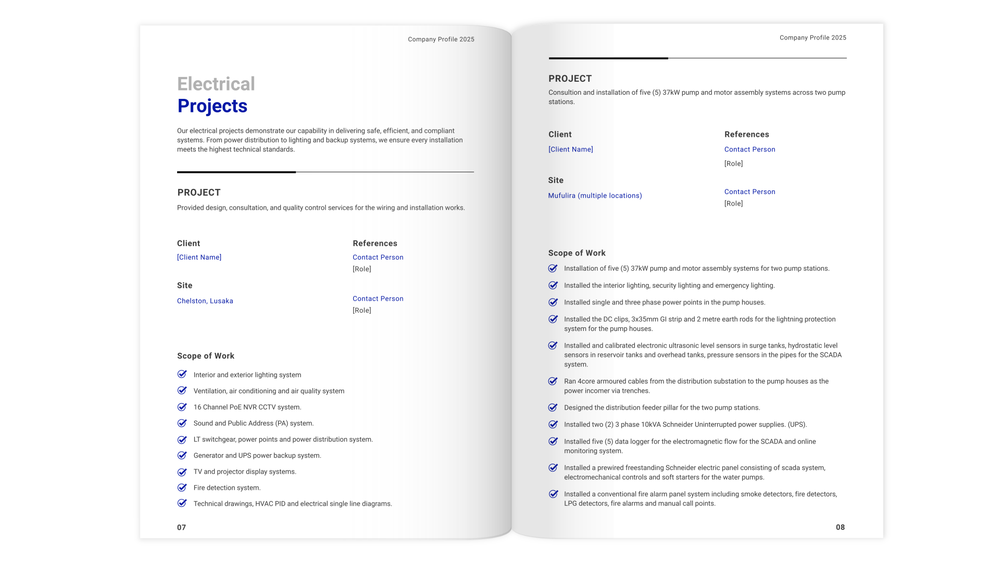
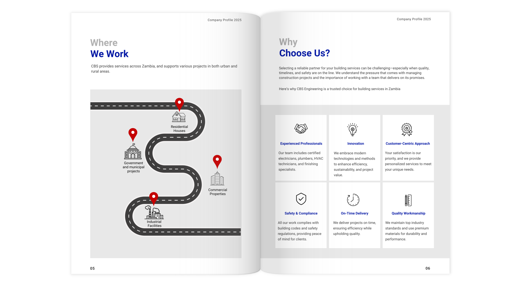

Editorial Design: CBS Engineering Company Profile
Content development, design and layout of a 21-page company profile for CBS Engineering Limited. CBS is a Zambian construction company specialising in electrical, HVAC, solar and building finishing services.
CBS Engineering had a strong technical track record but no formal documentation. The brief was to produce a company profile they could share with potential clients and partners.
The document needed to introduce the company clearly and back that up with real project experience across their three service areas.
The company had no existing written content. I interviewed the business owner and came up with the content that would be included in the profile such as the company overview, mission and vision statements, service descriptions and project summaries. The language needed to be specific enough for a technical audience but readable for anyone interested in learning about the company.

The profile was structured across seven sections. About Us, Our Services, Where We Work, Why Choose Us, Electrical Projects, Solar and Power Projects and Interior Finishing Projects. The structure moves naturally from company overview into service detail and then into project proof points.
A significant part of the work was turning raw technical project notes into clean readable entries. Each entry follows a consistent structure covering project description, client, site, scope of work and reference contacts. This covered 15+ projects across three service categories.
The layout used the company's existing brand colours — navy and white — with section icons and project photography supplied by the client. The document was designed to work both in print and as a PDF for digital sharing.

- Company overview, mission and vision.
- Four service categories: Electrical, Plumbing, HVAC and Building Finishing, each with a detailed service list.
- Project coverage across Zambia including Lusaka, Mufulira, Luapula and Chipata.
- 15+ documented projects spanning large-scale industrial installations, residential solar systems and interior finishing work.
- A closing photo spread showcasing the team and completed works on site.

The complete company profile is available to view. All personal contact details have been anonymised to protect client confidentiality. References from the client are available upon request.
View the Document